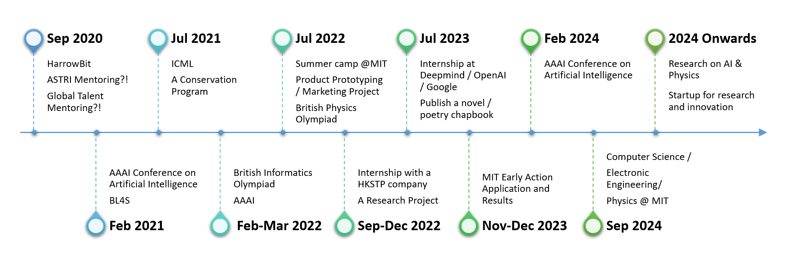

About me
Outline
A Brief IntroWhat I Love
My 5-Year Future Plan
Personal Details
My preference on the 5 major areas of ASTRI
A Brief Intro
Vincent Song is a STEM enthusiast who also loves philosophy and poetry.
For him, there is nothing cooler than the precise understanding of nature and the changes he can make in the everyday.
For this reason, if he were to study two subjects for the rest of his life, it would be physics and computer science. Physics models everything so perfectly with numbers, while computer science and technology as a whole, makes a difference to every single one of us. They give him amazing powers to understand and create, to help and change, and these are his aspirations.
That being said, Vincent believes that diversity gives rise to solutions, because diversity means change, and change means difference. Although keeping a main focus on STEM, specifically deep learning and physics, he has many far-flung interests, from literature to computer science, via physics to cute bears. Connecting different dots give new ideas, which in turn promote diversity, so he thinks it doesn't hurt to have more interests!
What I Love
Vincent is especially passionate about deep learning and has had previous experience of doing NLP-related research guided by CUHK professor Tan Lee; he believes AI is one of the most revolutionary tools at everyone’s disposal. Besides, it's just cool. Vincent also likes getting his hands dirty with Arduino-based projects. As a pastime, he is currently developing touch-free technologies with Arduino boards as a response to the pandemic. (See: Projects)
Vincent loves physics, too. He is working with a team of schoolmates on a particle physics experiment proposal, planning to enter it in the worldwide Beamline for Schools competition, organised by CERN. Recently, he has pitched a short video explaining the 'Principle of Least Action' to the Breakthrough Junior Challenge. He was a finalist together with his teammates at the UK Royal Society of Chemistry's Top of the Bench competition last academic year. (See: CV & Achievements)
When Vincent is not doing STEM-related work, he likes to write poetry. His work has previously appeared on Balloons Lit. Journal and he is a past winner of the Hong Kong Budding Poets Award.
'Interstellar' is his favourite film; 'A Hundred Years of Solitude' is his favourite book. He doesn't have any particular tastes for music, but thinks classical music is good for coding and falling asleep.
My 5-Year Future Plan
After returning to school this September, Vincent hopes to begin a group project (codenamed HarrowBit), aimed at teaching local primary students AI. He seeks to not only spread seeds of innovation, but also to form a potential web of STEM-enthusiasts, to formulate and test new ideas. To assist this endeavour, he is planning on developing a block-based wrapper for TensorFlow.
Looking further, over his next four years of secondary education, Vincent will joint computer-science and physics-related competitions (e.g. British Informatics Olympiad and British Physics Olypiad). Meanwhile, he will also actively attend and hopefully, even publish papers to respectable conferences, like AAAI and ICML. Of course, writing up world-class research is quite an ambitious challenge, but he sees it as a motivating goal to strive for in the next few years.
By autumn next year, Vincent hopes to be engaged in a conservation programme, merging tech with environmental protection. He is thinking of using spectrogram-based Machine Learning systems to recognise bird songs, allowing conservation organisations to monitor local biodiversity with minimal effort.
Of course, like any devoted student, Vincent would also like to get hands-on experience through internships. He is primarily considering Deepmind and OpenAI, because he thinks these are one of the most productive research companies in the field of AI, and he one day aspires to found organizations like them.
Vincent plans on majoring in computer science or physics at university (hopefully MIT), undertaking research on AI (NLP and RL, in particular) and quantum mechanics, perhaps seeing how they might complement each other. After uni, he'd like to start his own research-based company. All this is tentative, though, so only time will tell.
Personal Details
Name: SONG Yiding (Vincent)
Age: 14
Gender: Male
Class level: Year 10 / F3
Vincent currently studies at Harrow School UK, where he is part of many STEM-related projects and societies, like Project Leventis, which aims at assembling a VR Car Simulation from scratch.
My preference on the 5 major areas of ASTRI
- Intelligent Manufacturing
- Smart City
- Health Technology
- Financial Technologies
- Application Specific Integrated Circuits